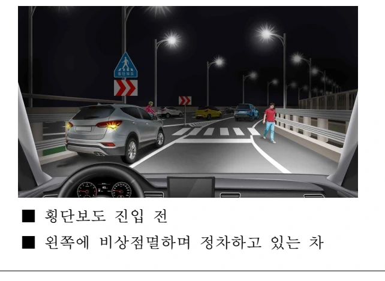

855. Which of the following are safe ways to drive in the given situation? (Select TWO)

- ①To facilitate smooth traffic flow, drive behind the vehicle in front without making any changes.
- ②Accelerate faster than the bicycle in order to pass through.
- ③Come to a stop at the stop line just before the crosswalk.
- ④Since the pedestrian has already crossed the crosswalk, proceed quickly.
- ⑤Slow down to prepare for the sudden departure of the stopped vehicle.
Show answer
Answer
③ Come to a stop at the stop line just before the crosswalk.
⑤ Slow down to prepare for the sudden departure of the stopped vehicle.
Reference
Risk prediction. In the picture situation in question, the driver of a car stopped on the left may be impatient or may suddenly enter the original lane without checking the right. Situations like this occur frequently on the road. Therefore, you should pay special attention to cars stopped at the edge. And behind the car stopped on the left, a cyclist is about to enter the crosswalk. Even though he is not a pedestrian, the driver must protect him. Therefore, you must stop at the stop line just before the crosswalk without considering the speed of the bicycle or the speed of your car.
Reference text is a machine translation for study.